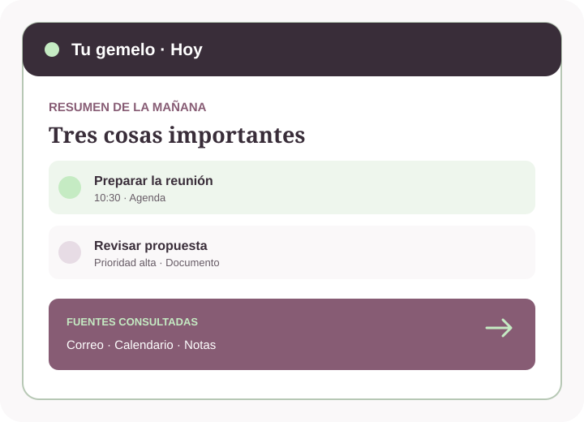
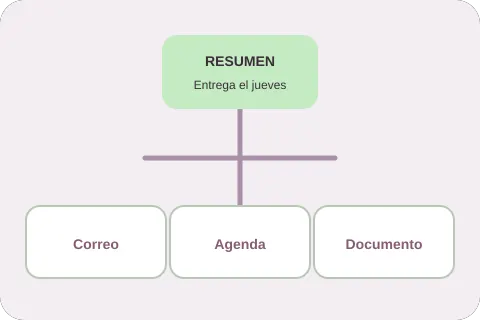

Entrena a tu gemelo
Conecta tus correos, agenda y documentos. Aprende tus prioridades, tu tono y tu forma de decidir.
Tu copia digital con criterio
Organiza tu agenda, filtra lo importante y resume tu trabajo con tus criterios. Cada dato llega con su fuente para que lo verifiques en segundos.
Crear mi gemelo
De la rutina al criterio
Tu gemelo aprende de ti, actúa por ti y te enseña su razonamiento.
Conecta tus correos, agenda y documentos. Aprende tus prioridades, tu tono y tu forma de decidir.
Organiza citas, filtra mensajes y prepara resúmenes con tus criterios, sin ruido innecesario.
Cada resultado incluye su razonamiento y la fuente original. Puedes comprobarlo y corregirlo.
Confianza verificable
Tú decides qué datos entrena tu gemelo. Cada resumen muestra el razonamiento y la fuente original.
Conoce cómo protegemos tus datos
Una pausa breve
Una pequeña pieza sonora acompaña la experiencia del producto.